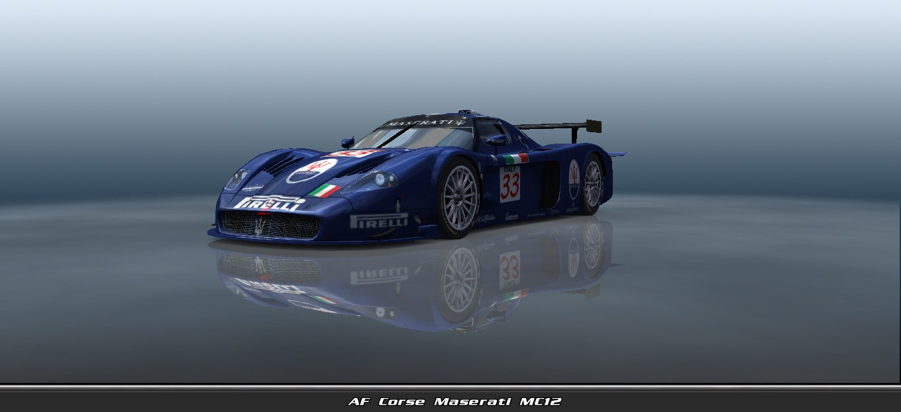
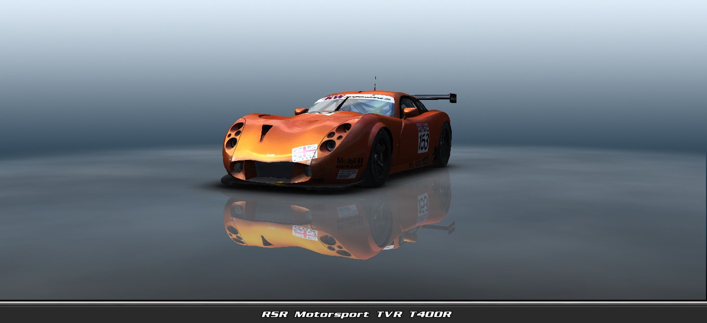

Estas viendo las Clases y Coches del videojuego GTR2: FIA GT Racing Game
Clases y Coches
GT (Grand Touring)
La clase GT es la categoría principal del juego, y está compuesta por vehículos de alto rendimiento, los cuales son versiones modificadas de coches deportivos de calle. Los coches de esta clase están diseñados para competir en el nivel más alto de resistencia y tienen un enfoque en la velocidad y la durabilidad.
NGT (Nuevo-GT)
La clase NGT es una categoría secundaria de coches dentro del FIA GT Championship y se sitúa un paso por debajo de la clase GT en cuanto a rendimiento y especificaciones. NGT se refiere a "N-GT" (Nuevo GT) y está diseñada para ser una alternativa más económica a los coches de la clase principal GT.
G2
La clase G2 está dirigida a vehículos más accesibles en términos de coste y tecnología, y suelen ser versiones menos potentes que los coches de las clases GT y NGT.
G3
La clase G3 es una categoría destinada a coches aún más asequibles y menos potentes que los de la clase G2. Los coches de esta clase están diseñados principalmente para competiciones de iniciación o para jugadores que prefieren coches más ligeros y sencillos.
GT (Grand Touring)
Maserati MC12

✨ Información base
El Maserati MC12 es la versión de competición extrema basada en el superdeportivo homónimo desarrollado por Maserati a partir del chasis del Ferrari Enzo. Concebido para devolver a la marca del tridente a lo más alto del automovilismo internacional, el MC12 GT1 debutó en 2004 en la FIA GT Championship, compitiendo en la clase GT. Diseñado en colaboración con Dallara y con base Ferrari, el MC12 no solo destacó por su potencia brutal, sino también por su aerodinámica sofisticada y fiabilidad. Dominó la FIA GT Championship por años.
📅 Año de debut
2004 en la FIA GT Championship (Clase GT).
🔧 Motorización y rendimiento
- Motor: V12 a 65°, derivado del Ferrari Enzo.
- Cilindrada: 6.0 litros (5998 cc).
- Potencia: ~650 hp @ 7200 rpm.
- Par motor: ~750 Nm @ 5000 rpm.
- Transmisión: Secuencial de 6 velocidades.
- Tracción: Trasera (RWD).
🏁 Chasis y aerodinámica
- Base: Monocasco de fibra de carbono, estructura derivada del Ferrari Enzo.
- Carrocería: Materiales compuestos y fibra de carbono.
- Peso: ~1100 kg.
- Aerodinámica: Nariz extendida / Alerón trasero masivo, fijo / Difusor y canalizaciones optimizadas para carga / Mayor superficie que sus rivales (razón por la cual inicialmente fue polémico).
🔧 Suspensión y frenos
- Suspensión: Doble horquilla independiente con amortiguadores ajustables.
- Frenos: Discos ventilados de carbono, pinzas Brembo de 6 pistones.
🏆 Historial competitivo
- Equipo: Vitaphone Racing Team (y otros como JMB Racing, Racing Box).
- Pilotos: Andrea Bertolini, Michael Bartels, Karl Wendlinger, Timo Scheider.
- Titulos: Campeón del FIA GT Championship 5 veces consecutivas (2005-2009) / Campeón Mundial de Constructores FIA GT1 en múltiples ocasiones.
⚖️ Controversia reglamentaria
El MC12 fue fuertemente criticado por su tamaño (más largo y más ancho que el resto) y por no cumplir inicialmente con la homologación de 25 unidades de calle / Se le prohibió correr en Le Mans debido a dimensiones fuera del reglamento ACO / Aun así, dominó el GT mundial gracias a su fiabilidad, aerodinámica y potencia.
🚗 Versión de calle
- Nombre: Maserati MC12 Stradale.
- Unidades: 50 unidades (25 por año en 2004 y 2005).
- Precio original: $700.000 USD.
- Motor: Mismo V12, levemente restringido (~630 hp).
- Interior: Más simple que el Ferrari Enzo, sin ABS ni control de tracción.
🎧 El Sonido del Maserati MC12
El MC12 es una sinfonía mecánica en clave mayor. El V12 Ferrari adaptado ruge con un tono agudo, agresivo y limpio, mucho más refinado que un V8, pero no menos brutal.
🎼 Tono general
- Agudo, cristalino, casi "italiano de ópera".
- Más afinado que un Corvette C5-R, pero con igual o mayor presencia.
💥 Aceleración
El motor arranca con un gemido grave que escala rápidamente hasta un chillido agudo que corta el aire con violencia.
🔁 Cambios de marcha
Sonido seco y mecánico con un clack de transmisión secuencial. Explosiones breves entre cambios altos.
🏁 Al pasar a fondo
Al pasar por recta plena, el MC12 deja un estallido agudo y un eco profundo, como un Ferrari de Fórmula 1 adaptado a la resistencia.
🎧 ¿A qué se parece?
- Similar al Ferrari 550 GTS Prodrive o al Aston Martin DBR9, pero más agudo.
- La mezcla perfecta entre elegancia sonora y ferocidad competitiva.
NGT (Nuevo-GT)
TVR T400R

✨ Información base
El TVR T400R es un coche de carreras británico desarrollado por TVR Engineering, una firma famosa por su enfoque artesanal y radical. Fue creado a principios de los 2000 como una evolución de los modelos Speed Six/Tuscan, con el objetivo de competir en campeonatos internacionales como la FIA GT Championship dentro de la clase NGT.
Este coche fue fabricado en cantidades limitadas y es uno de los últimos GT de competición construidos sin ayudas electrónicas, lo que lo convierte en un desafío puro para el piloto. Su estructura de peso ligero, diseño radical y motor atmosférico le dan un carácter único.
📅 Año de debut
- 2003 en la FIA GT Championship (Clase NGT).
- Compitió también en el British GT Championship y Le Mans Series.
🔧 Motorización y rendimiento
- Motor: 6 cilindros en línea (Speed Six), atmosférico.
- Cilindrada: 4.0 litros (3967 cc).
- Potencia: ~440 hp @ 7000 rpm.
- Par motor: ~450 Nm @ 5500 rpm.
- Transmisión: Manual secuencial de 6 velocidades (Hewland).
- Tracción: Trasera (RWD).
🏁 Chasis y aerodinámica
- Base: Tubular de acero y aluminio con monocasco de materiales compuestos.
- Carrocería: Fibra de vidrio y carbono.
- Peso: ~1100 kg.
- Aerodinámica: Diseño fluido con alerón trasero fijo / Splitter frontal agresivo / Difusor simple pero funcional /Lateral afilado sin exceso de elementos.
🔧 Suspensión y frenos
- Suspensión: Doble horquilla ajustable en las 4 ruedas.
- Frenos: Discos ventilados con pinzas AP Racing.
🏆 Historial competitivo
- Equipo: Team LNT, Racesport Peninsula TVR, TVR Engineering.
- Resultados destacados: Resultados modestos pero destacables en circuitos como Donington, Oschersleben y Brno.
- Participaciones en Le Mans: En 2004 y 2005 con el T400R Le Mans, aunque con abandonos por fiabilidad.
⚖️ Fortalezas y debilidades
- ✅ Fortalezas:
-> Gran velocidad en curvas gracias a su peso ligero.
-> Reacciones vivas y manejo agresivo.
-> Sonido único del seis en línea.
- ❌ Debilidades:
-> Fiabilidad mecánica cuestionable en carreras largas.
-> Menor potencia frente a los Porsche NGT.
-> Carece de ayudas electrónicas: difícil de dominar.
🚗 Versión de calle
- Nombre: TVR T400R (base) / TVR Typhon (versión de calle más radical).
- Unidades: Extremadamente limitadas (menos de 50).
- Precio original: ~£60,000 (en Reino Unido).
- Motor: Mismo bloque Speed Six ajustado (~400 hp).
- Diseño: Idéntico al de carreras, pero con interiores más espartanos que lujosos.
🎧 El Sonido TVR T400R
El T400R tiene un rugido metálico crudo, muy diferente a los GT alemanes o italianos. Su seis en línea atmosférico canta de forma áspera y salvaje, muy británico en carácter.
🎼 Tono general
- Sonido mecánico áspero, como una mezcla de BMW y moto de pista.
- Más agudo que un V8, pero menos armónico que un V12.
💥 Aceleración
- Gorgoteo grave a bajas revoluciones, que escala a un chillido afilado.
- Sonido visceral, muy expuesto, sin aislamiento.
🔁 Cambios de marcha
- Cambios secos, con retumbos entre marchas por la caja secuencial.
- Petardeos en reducciones, explosiones breves.
🏁 Al pasar a fondo
Aullido metálico vibrante, que recuerda a un coche de GT de los años 90, sin electrónica que "filtre" el alma del motor.
🎧 ¿A qué se parece?
- Mezcla entre un BMW M3 E46 de carreras y un Caterham R500 con escape libre.
- Suena más agresivo y crudo que el Porsche GT3-RS o el Ferrari 360.
G2
BMW M3 GTR
✨ Información base
El BMW M3 GTR es la versión de carreras del BMW M3, quizas lo conozcas mas por su participación en el videojuego Need for Speed: Most Wanted, pero aparece en FIA GTR2 debido a su participación en las 24 de Horas de Spa compitiendo en la Clase G2 de la Temporada 2004 de la FIA GT Championship. El M3 GTR fue creado para competir contra Gran Turismos de la epoca, y el modelo E46, lanzado en 2001, destacó por su motor V8 de 4.0 litros, que le dio una ventaja competitiva sobre el Porsche 911 GT3-R, incluso ganando siete de diez carreras en la clase GT en 2001.
📅 Año de debut
2001 en la FIA GT Championship (Categoría GT).
🔧 Motorización y rendimiento
- Motor: V8 atmosférico a 90°, código P60B40, ubicado en la parte delantera.
- Cilindrada: 4.0 litros (3997 cc).
- Potencia: ~500 hp @ 7800 rpm.
- Par motor: ~499 Nm @ 6500 rpm.
- Transmisión: Secuencial de 6 velocidades (Getrag.)
- Tracción: Trasera (RWD).
🏁 Chasis y aerodinámica
- Base: BMW M3 E46 modificado.
- Carrocería: Fibra de carbono y materiales compuestos.
- Pilotos: Jörg Müller, Hans-Joachim Stuck, Dirk Müller y Fredrik Ekblom.
- Temporada 2001: Ganó 7 de 10 carreras.
- Campeonatos: Constructores y Equipos.
⚖️ Controversia reglamentaria
Tras su dominio, la FIA impuso reglas de homologación más estrictas. BMW produjo solo unas
10 unidades de calle para cumplir, pero se retiró del campeonato en 2002.
🚗 Versión de calle
- Nombre: BMW M3 GTR Straßenversion.
- Unidades: ~10 construidas.
- Precio original: $250,000 - $300,000 USD.
- Motor: Mismo V8 adaptado.
🎧 El Sonido del BMW M3 GTR
El BMW M3 GTR es legendario no solo por su rendimiento, sino por su inconfundible rugido V8 atmosférico. El motor P60B40 de 4.0 litros da vida a un sonido único, de competición pura.
🎼 Tono general
- Agudo y metálico, muy distinto al de un V8 convencional de calle.
- Rugido limpio pero agresivo, con carácter afilado.
💥 Aceleración
- Comienza con un gruñido bajo que escala a un aullido agudo.
- Cerca del limitador (8000 rpm), el motor grita con intensidad visceral.
🔁 Cambios de marcha
- Chasquido seco al subir de marcha, con explosiones sutiles al cortar gas.
- Retumbos metálicos y petardeos al reducir marchas.
🏁 Al pasar a fondo
Cuando pasa a toda velocidad frente a ti, suena como un grito mecánico que se disuelve en el aire, dejando un eco metálico detrás.
🎧 ¿A qué se parece?
- Más parecido a un Ferrari 360 GTC o un Porsche GT2 de carreras que a un V8 de calle.
- Un equilibrio entre precisión alemana y brutalidad sonora del motorsport.
SEAT Toledo GT
✨ Información base
El SEAT Toledo GT Silhouette es uno de esos autos “fantasma” que pasaron por la historia del motorsport con bajo perfil, pero dejaron una huella muy especial. Apenas un puñado de unidades, sin versión de calle real, y participaciones esporádicas fuera de España lo convierten en una pieza de culto para quienes jugamos GTR2 o seguimos el GT europeo de principios de los 2000.
Cuando la FIA GT abrió la puerta a los “silhouette” —prototipos con carrocería que imita a un coche de calle sobre un chasis tubular- SEAT Sport reaccionó transformando su Toledo Cupra de turismos: nació así el Toledo GT.
📅 Año de debut
- 2002 (test), 2003 en el Campeonato de España de GT.
- Invitado de lujo en las 24h de Spa en 2003 de la FIA GT Championship.
🔧 Motorización y rendimiento
- Motor: Audi V6 3.0 biturbo (90°), ubicado en el medio.
- Cilindrada: 3.0 litros (2995 cc).
- Potencia: ~510 hp @ 6300 rpm.
- Par motor: ~600 Nm @ 5230 rpm.
- Transmisión: Hewland secuencial 6 vel. con autoblocante
- Tracción: Trasera (motor en posición central-longitudinal)
🏁 Chasis y aerodinámica
- Base: Jaula multitubular de acero al cromo-molibdeno
- Carrocería: Compuestos y fibra de vidrio; “look” Toledo 1M sobredimensionado.
- Peso: ~1100 kg.
- Aerodinámica: Alerón trasero y difusor de gran superficie; frontal con splitter profundo y branquias laterales.
🔧 Suspensión y frenos
- Suspensión: Doble horquilla, push-rod ajustable en ambos ejes / Amortiguadores Öhlins de 3 vías.
- Frenos: Frenos AP Racing: discos ventilados Ø 380 mm, pinzas monobloque de 6 pistones.
🏆 Historial competitivo
- Equipo: SEAT Sport / Darro Motor
- Spa 24h 2003: DNF (Caja)
- Campeonatos: Campeonato de España de GTs.
🚗 Versión de calle
No llegó a existir. SEAT planeó homologar una serie limitada bajo el nombre Murcia, pero el proyecto se canceló, de ahí que se optara por el silueta Toledo en lugar del Cupra GT para seguir compitiendo.
🎧 El Sonido del Toledo GT
El Toledo GT tiene un timbre grave, denso y vibrante, con un toque algo áspero (como es común en motores de competición sin silenciadores).
🎼 Tono general
Grave y gutural, típico V6, afilándose con el silbido de los turbos.
💥 Aceleración
Estallido sordo al abrir wastegates, seguido de un bramido continuo hasta 7000 rpm.
🔁 Cambios de marcha
Clack seco de secuencial, con petardeo al cortar.
🏁 Al pasar a fondo
Mezcla de soplido turbo y rugido V6, menos metálico que un V8 GTS-R, más rabioso que un Porsche Cup.
🎧 ¿A qué se parece?
- Usa una configuración V6 biturbo con sonido similar: grave, denso, con silbidos notorios y petardeos secos, haciendolo parecer a un Audi TT-R de la DTM.
- Aunque más afinado, comparte el mismo carácter agresivo con soplidos constantes y tono industrial, parecido al Nissan 350Z Biturbo de la Super GT.
- Aunque aspirado, ese V6 tenía una nota metálica parecida en carácter, aunque no en presencia de turbo, parecido al del Alfa Romeo 155 V6 TI de la DTM.
G3
Lotus Elise
✨ Información base
El Lotus Elise de competición representa la filosofía "menos es más" de Lotus: bajo peso, agilidad extrema y una experiencia de manejo pura. En GTR2, el Elise participa en la Clase G3, donde enfrenta a autos de menor potencia comparados con GT o G2, pero con una gran eficiencia dinámica y comportamiento ágil en curvas.
Basado en el Lotus Elise S1 y S2, fue modificado por equipos privados y preparadores como MotorSport Elise, adaptando el chasis y aerodinámica a regulaciones FIA GT para categorías menores.
📅 Año de debut
1996 (versión de calle) - participación en categorías GT menores desde finales de los 90 y principios de los 2000.
🔧 Motorización y rendimiento
- Motor: 4 cilindros en línea, montado en posición central trasera.
- Cilindrada: 1.8 litros.
- Potencia: ~200 hp @ 8200 rpm.
- Par motor: ~220 Nm @ 5500 rpm.
- Transmisión: Manual secuencial de 6 marchas.
- Tracción: Trasera (RWD).
🏁 Chasis y aerodinámica
- Base: Chasis de aluminio extruido y pegado (ultraligero).
- Suspensión: Independiente, doble horquilla con configuración ajustable.
- Frenos: Discos ventilados, pinzas AP Racing.
🏆 Historial competitivo
- Equipo: Lotus Sport / MotorSport Elise / Algunos Equipos Privados.
- Categoria Principal: G3 / GT Light.
- Competiciones en las que Participo: FIA GT - Clase N-GT o G3 / Belcar Endurance / Britcar.
⚖️ Filosofía de diseño
La clave del Elise está en su bajo peso y equilibrio. No necesita grandes cifras de potencia para ser veloz: su ligereza lo convierte en un arma perfecta para curvas cerradas y sectores técnicos.
🚗 Versión de calle
- Nombre: Lotus Elise S1.
- Unidades: ~35.124 unidades.
- Precio original: ~$30,000 USD.
- Motor: Rover K-Series, 1.8L 16V.
🎧 El Sonido del Lotus Elise
El Elise aunque no tan brutal como un V8 o V10, el sonido del Elise tiene su carácter especial: afilado, directo y lleno de vibraciones mecánicas.
🎼 Tono general
- Alto y chillón, clásico de un motor atmosférico de 4 cilindros girando alto.
- Similar a un auto de Fórmula Ford con esteroides.
💥 Aceleración
- Comienza con un zumbido grave que rápidamente escala a un chillido metálico.
- El motor sube de vueltas rápido, dando la sensación de urgencia constante.
🔁 Cambios de marcha
- Ruidos cortos y secos al subir de marcha.
- Retumba sutilmente al reducir, con crujidos mecánicos por el embrague de competición.
🏁 Al pasar a fondo
No deja un rugido profundo, sino un chillido continuo que se va perdiendo como una sierra de precisión a toda velocidad.
🎧 ¿A qué se parece?
- Similar al Honda S2000 de pista, o un Toyota MR-S modificado.
- En GTR2, su sonido lo diferencia de los monstruos G2 por su agudeza y velocidad de giro.
Contacto
"El Seat Toledo GT, el auto mas basado del juego."